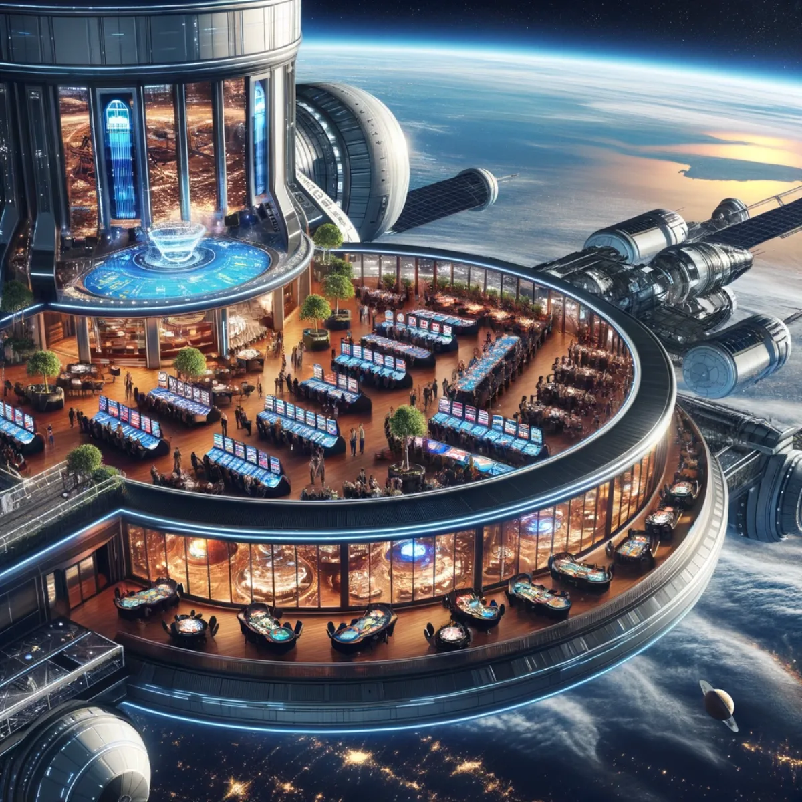
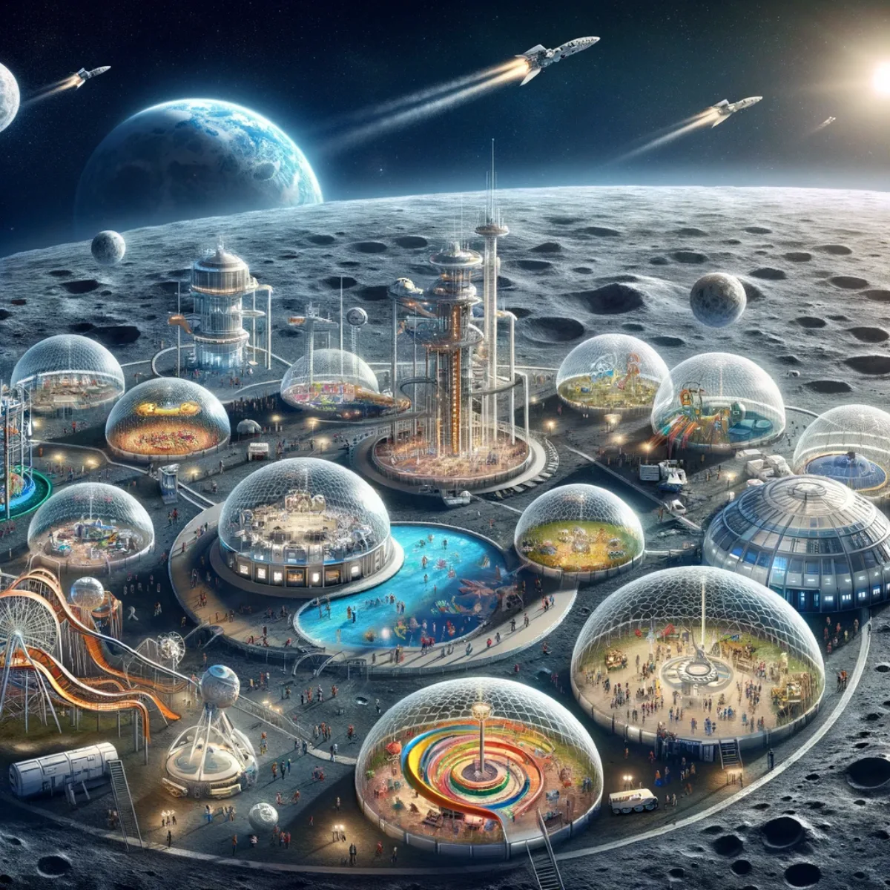
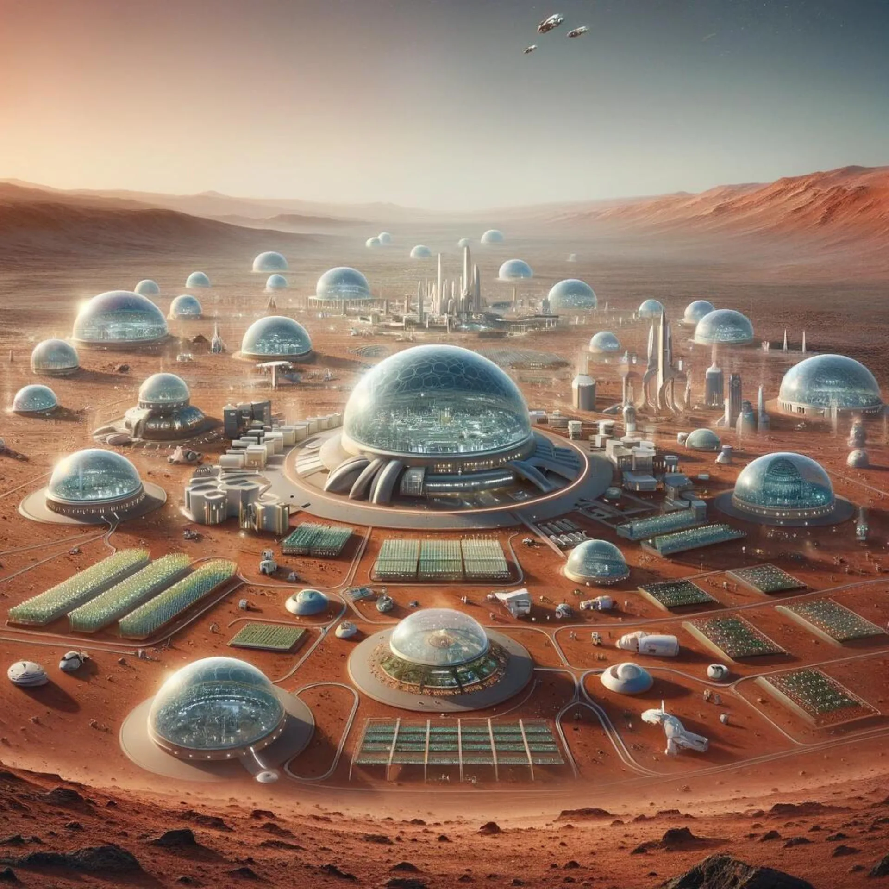
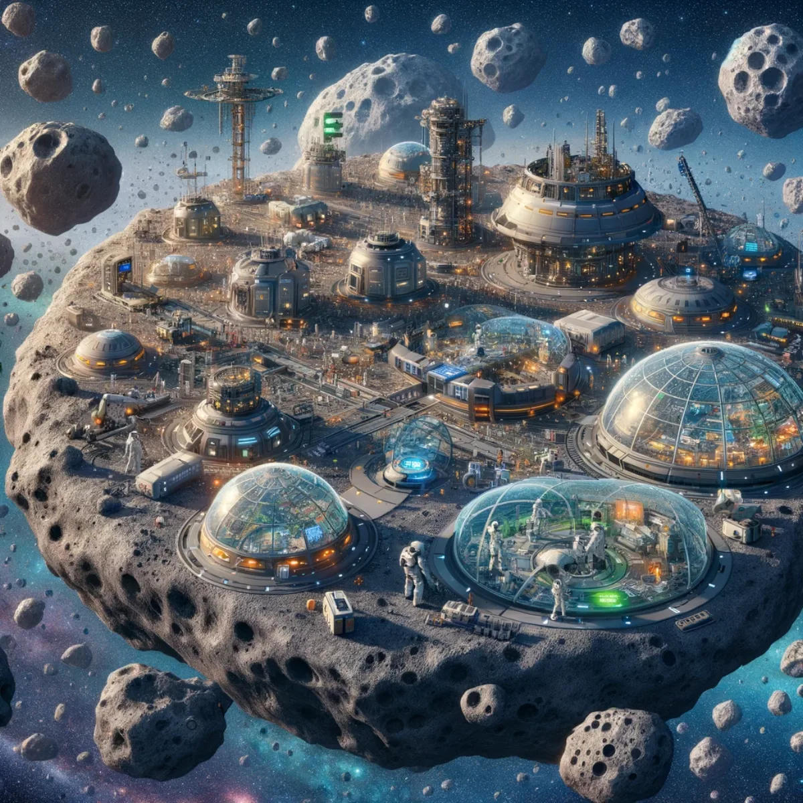
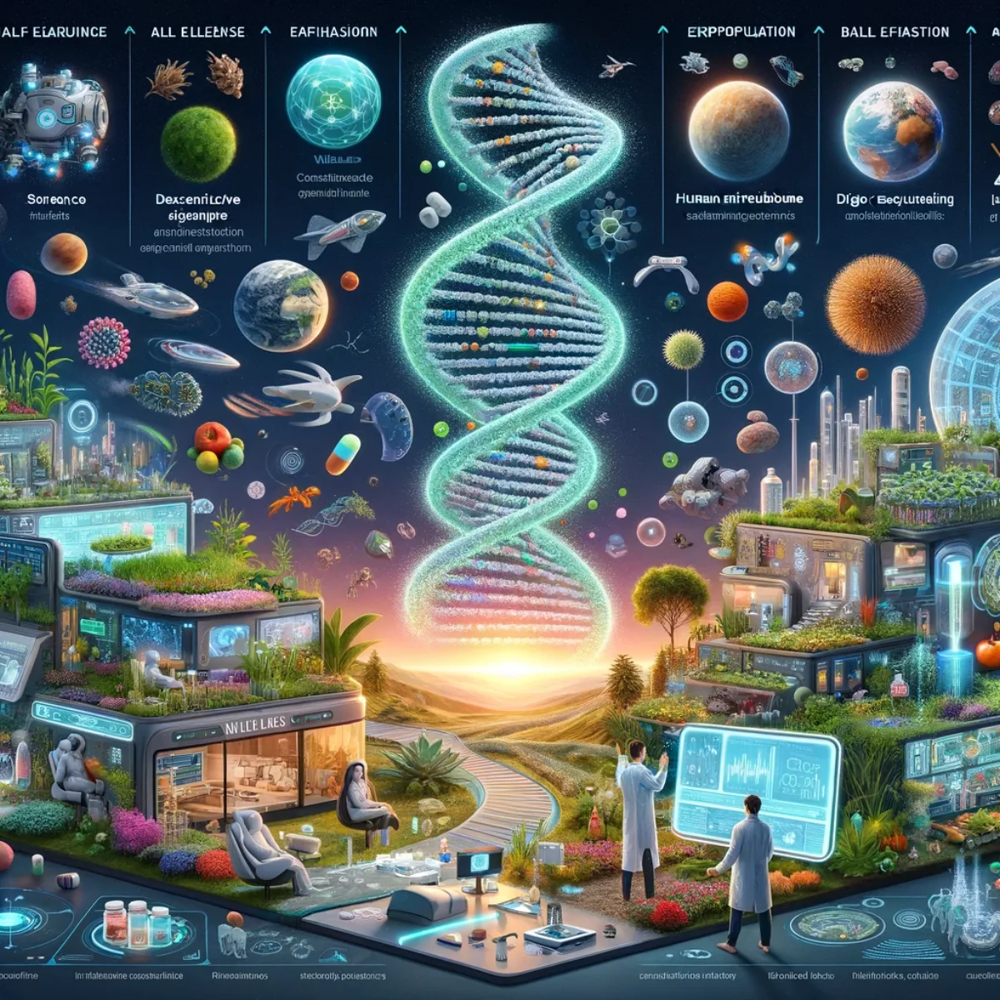

Pathways / Frontiers
Commercial Space Development
An optimistic, civil science-fiction vision of moving up the Kardashev Scale together, from orbit to the asteroid belt and beyond, with you as an owner-builder of your part rather than a customer of someone else's future.

Beyond gravity, beyond luxury: in orbit, every win is astronomical
Nova Escape Resort: The Ultimate High-Stakes Haven
The Kardashev Scale, proposed by astrophysicist Nikolai Kardashev, categorises civilisations based on their energy consumption capabilities. From harnessing planetary energy (Type I) to controlling galaxies (Type III), it's a framework for the potential reach of advanced societies.
The arrival of Artificial General Intelligence (AGI) and Artificial Superintelligence (ASI) might carry humanity towards those realms and the building of cosmic megastructures. Picture Nova Escape Resort, a marvel floating in space, luxury beyond Earth's confines. In a project this size no one hands you a finished world; the people who build it own their part, the models, digital twins and plans behind it, custom to the work they do and evolving with them. As we edge towards AGI and ASI, ventures like this become conceivable, turning science fiction into reality, where every win is indeed astronomical.
Where humanity's dreams take form: built in the silence of space
Starforge Yards: Crafting the Vessels of Tomorrow
Starforge Yards marks humanity's leap into the cosmic shipbuilding era, where the vacuum of space becomes the cradle of interstellar vessels. In that silent expanse, the dreams of exploration and expansion take physical shape, guided by advanced technology and AI-driven engineering that the builders shape and own rather than rent. Here, amidst the tranquillity of the cosmos, raw materials and bold designs come together into starships capable of navigating the celestial seas: not a service sold to you, but the tools and plans held by the people doing the work, evolving with them. It's a testament to human ingenuity and the long reach for the stars, crafting not just ships but the future of interstellar travel.

Leap higher: the Moon's gravity is just the beginning
Moonlight Frontier: Explore, Enjoy, Discover
Moonlight Frontier unveils a new chapter in lunar exploration, transforming the Moon from a desolate orb into a vibrant hub of adventure and discovery. Here, the Moon's gentle gravity is but a gateway to unparalleled experiences, from low-gravity sports that let you leap higher to the serene beauty of lunar landscapes that stretch the imagination.
This sprawling complex is one everyone helps shape, from families to scientists to dreamers, each owning their piece of the plans, tools and digital twins behind it rather than renting a ready-made attraction. It's a place to experience the Moon in ways once confined to the realm of imagination, marking a new dawn in how we live off the Earth.

Step into the future, where red dust blooms into civilisation
Terra Mars: A New Dawn for Humanity
Terra Mars epitomises the pinnacle of human ambition and technological prowess, transforming the red desolation of Mars into a thriving civilisation. With SpaceX's gateway to Mars serving as the vital conduit for pioneers and supplies, and Tesla Optimus robots labouring alongside humans to terraform the barren landscapes, the foundation of a new world is laid.
Beyond these feats, Terra Mars ventures into the realm of science fiction: bio-domes where Martian flora thrives, atmospheric processors that mimic Earth's blue skies, and a society where human ingenuity merges with Martian resilience. The people who settle it own the tools, models and plans they build there, custom to their patch of the frontier and growing with it, rather than renting a world made by someone else. Here, in the red dust, a new chapter for humanity is written, blooming with possibilities.

Mine the riches, forge a community: in the belt, we thrive together
Asteroid Belt Colony: Prosperity Amongst the Stars
AGI and ASI herald an era where humanity extends its reach beyond Earth, tapping into the mindboggling and vast resources of the asteroid belt. This colossal endeavour not only promises untold wealth from the myriad minerals found in these celestial bodies but also signifies a monumental shift in how we view resource consumption.
By drawing on the boundless riches of space, we ease the pressures on Earth's environment, protecting it for future generations. Within the belt, a community of pioneers flourishes, each owning the tools, systems and digital twins they build to live and work there rather than renting them from anyone, united by a common goal: to thrive together in this new frontier. Our survival and prosperity are no longer confined to the cradle of Earth but span the vastness of the solar system.

In the vast garden of the universe, we are the keepers of life
Cosmo-Genesis Initiative: Dawn of New Worlds
Humanity could even step into the role of cosmic gardener, sowing the seeds of life across the galaxy. Grounded in the fusion of biotechnology and terraforming sciences, this initiative could transform barren planets and moons into habitable realms, echoing Earth's biodiversity. Using gene editing to engineer life forms resilient to extra-terrestrial environments, and robotics for ecological care, it seeks to create self-sustaining ecosystems, with the tools and models held and shaped by the people doing the work rather than licensed from afar. It's a testament to human ingenuity, turning the dream of spreading life among the stars into a tangible future, where humanity nurtures the blossoming of new worlds in the cosmic expanse.
Join the journey: together, we craft worlds beyond
Harmony in the Cosmos: The Nexus Odyssey
You, the creative-minded optimistic person this page drew in, working alongside Aura of Intelligence and Space Development Nexus, mark the dawn of an era where these civil science-fiction dreams begin turning real, built by the people who show up rather than sold to them ready-made.
With the almost certain advent of AGI and ASI, the canvas of possibilities stretches across our solar system, home to over 400 distinct objects of interest including planets, planetoids, moons, Near-Earth Objects, asteroids and comets. Each holds the potential for expanding our visions and economies, and each part you take on is yours to build and own, the tools, models and plans custom to your work and growing with you, towards a future where humanity thrives in Joyful Responsible Abundance. Together, let's use this harmony and innovation to explore, settle and cherish the vast garden of the cosmos, making the once imagined a cornerstone of our collective destiny.
Keep exploring